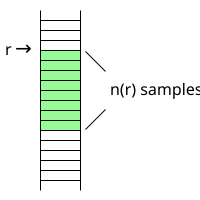

This module performs depth dependent downsampling, but keeps the result on the original resolution.
A result of this module is that the stochastic part of the noise is more and more averaged out with increasing range, at the expense of effective coarser resolution.
The target sample distance for downsampling is computed as a function of range r:
SD(r) = Sample distance at range 100 × (r / 100)2.
The number of samples included in the downsampling at range r is:
n(r) = round( SD(r) / SDorig ),
where SDorig is the original sample distance.

If bottom depths are available, then samples above bottom and below bottom will be averaged separately.